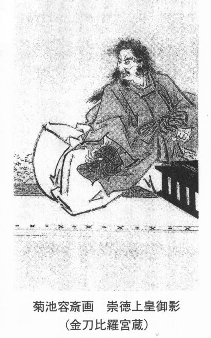

| 「白峯」と崇徳院御霊信仰に関するノート 私見『雨月物語』論 | |
| 齋藤 吉勝 | |
| UNKNOWN (2014) | |
「白峯」と崇徳院御霊信仰に関するノート
齋 藤 吉 勝
丸谷才一氏は、御霊信仰について「古来、怨みを呑んで死んだ人の亡魂は怖い、丁重に供養しなければ大変な災厄をもたらす、しかし礼を尽して祀ればその供養した者を守護してくれるという信仰 （１） 」としている。そこで本稿では、『雨月物語』巻頭の「白峯」に焦点を絞り、崇徳院御霊信仰の史実を追跡し、その読本としての特徴を考察してみたい。
山田雄司氏の『崇徳院怨霊の研究 （２） 』は、崇徳院御霊信仰を語る上で、決して避けては通れない力作である。ここでは少しく長くなるが、その中から特に中心となる崇徳院について、怨霊について、鎮魂についての三つの部分を瞥見してみよう。
①日本最大の怪奇小説と言われる 上田秋成の『雨月物語』「白峯」の中では、
「 汝（なんぢ）しらず、近頃（ちかごろ）の世の乱（みだれ）れは朕（わ）がなす事（わざ）なり。生きてありし日より魔道（まだう）にこころざしをかたぶけて、平治（へいぢ）の乱（みだれ）を発（おこ）さしめ、死して猶（なほ）、朝家（てうか）に祟（たた）りをなす。見よ見よ、やがて天（あめ）が下（した）に大乱を生（しやう）ぜしめん （３） 」
とある。
②崇徳天皇は、元永二年（一一一九）五月二十八日、鳥羽天皇の第一皇子として誕生し、諱を顕仁（あきひと）といった。母は大納言藤原公実の女璋子（待賢門院）であった。しかし、その出産については、崇徳天皇に暗い影を落としていた。
③『古事談』によると、崇徳は実は鳥羽天皇の祖父・白河院が璋子と密通して生まれた子 で、人々はみなこれを知っており、鳥羽院もそのため崇徳のことを「叔父子」と呼んでいたという。（略）「父」から「叔父子」と蔑まれた崇徳の心の中には、鬱々たるものが積み重ねられていったに違いない。これが保元の乱の遠因になっていった。
④崇徳院には曾祖父や父の院政のため実権が与えられておらず、 もっぱら和歌の世界において自己を表現していったのであった。
⑤崇徳院は次の天皇に、自らの子である重仁をつけようとしていたが、美福門院（鳥羽天皇の第二皇后・近衛天皇の母） によってその計画もうち砕かれてしまった。
（保元の乱の詳細については省略。）
⑥（略）こうして天皇側が崇徳院側を挑発し、追いつめていった。（略）乱そのものは数時間で決着がついた。（略）そして、崇徳院に与した武士の多くが降参し、処刑・配流となった。捕らえられた崇徳院もまた、保元元年（一一五六）七月二十三日、鳥羽から船に乗り讃岐へ移された。
⑦ 歴史物語『今鏡』（一一七〇）の作者・藤原為経（寂超）は崇徳天皇の蔵人であり、保元の乱後は讃岐の崇徳院を訪れている。（略）これらの歌や、『今鏡』の記事からうかがわれる崇徳院の実像は、遠い讃岐でひっそりと後生を祈る姿であって、軍記物語である『保元物語』に見られるような、怒りの余り荒れ狂う姿とはかけ離れていると言わざるを得ない。（略）後鳥羽院とは対照的に、讃岐に流された崇徳院は実に穏やかであったと言えよう。
⑧各種の諸本によると、崇徳院は、香川県坂出市府中町の讃岐国府のすぐ西にある鼓丘で暮らしていた。そして、長寛二年（一一六四）八月二十六日、讃岐国府からそれほど遠くない志度において崩御した、と思われる。
⑨『保元物語』では、崇徳院は生きながらにして怨霊になったとされ、そのことにより平治の乱が巻き起こったものとする。
⑩崇徳院は華厳経・大集経・大品般若経・法華経・涅 槃経の五部大乗経を書写し、その奥書に舌先を食い切った血で誓文を認め、生きながらに天狗の姿となって祟りをなし、平治の乱を引き起こしたことになっている。が、血書五部大乗経の存在ははなはだ疑わしく、経自体が存在しないか、あるいはたとえ存在したとしても捏造された可能性が非常に高いものと思われる。
⑪しかし『保元物語』は、崇徳院が怨霊として認識されるようになった安元年間以降の作であることは確実なので、崇徳院の部分は多分に脚色されていることを前提として読み解かなければならない。「怨霊」という人の心理面に関わる問題については、当時の政治状況や著述した人物によっても認識は変わってしまうことにとりわけ注意すべきである。
このように崇徳院について概観してみると、⑧の崩御の場所については疑問が残るが、⑦と⑨～⑪が筆者には特に重要のように思われる。すなわち実際の崇徳院は、実に立場の弱い悲劇の天皇だったのであり、流された讃岐においても穏やかに後生を祈 って崩御した。しかるに、『保元物語』その他の作品においては、その時代や作者の状況によって意図的に怨霊の人物として取り扱われた形跡がうかがえるのである。
①建久二年（一一九一）閏十二月、崇徳院の同母弟・後白河院は病に悩まされ、崇徳院と安徳天皇の怨霊に鎮謝し、 それぞれ讃岐と長門に菩堤を弔うための堂を建立するよう命じている。ともに後白河院により非業の死に追いやられたため、後白河院はその怨霊が自らにふりかかってきていると認識し、鎮魂をはかった。
② 『保元物語』全体として崇徳院の怨霊が構想された背景には、承久の乱により讃岐に流され望郷の思いを秘めて亡くなった、後鳥羽院の怨霊があったのではないだろうか。
③崇徳・安徳・顕徳・順徳など、京都から離れた地で没した天皇の諡号には「徳」の字を用いることになっており、それは異境の地で無念の死を遂げた天皇の怨霊を鎮めるための、言霊信仰に基づく措置であった。
④寿永三年（一一八四）には、崇徳院の菩堤を弔うために崇徳院廟が建立されていく。が、これには保元の乱の際崇徳院方に与し、乱後常陸国浮島に流された後、赦されて帰京し、蔵人頭となった藤原教長が関わっていると考えられる。これは、世の混乱に乗じて崇徳院の怨霊の存在を語り、自己の復権を得ようとした人々が裏で働きかけていたに違いない。
⑤『源平盛衰記』では、二条帝が天皇の位を六条に譲ってわずか三十日余りで亡くなったのは、崇徳院の御霊のせいであるという風聞があったことを記している。この部分でも、後の知識を利用して、天皇が早世したのを崇徳院の怨霊のせいだ、と理由づけているに過ぎない。

⑥安元三年（一一七七）四月二十八日、京都で大火災が起こった。この結果、王権に関わる大極殿が消失。 これは、崇徳院と藤原頼長の祟りによるものとされ、後白河院は怨霊を最も強く意識した。なぜなら、前年には、後白河院の周辺の人物が相次いで亡くなっていたからである。
⑦『吉記』寿永三年（一一八四）四月十五日条によると、元崇徳院の蔵人・藤原教長が崇徳院の怨霊の存在を語っていた中心人物であり、鎮魂をすべき旨を唱えていたことが判っている。
以上、山田氏は①～⑦まで、すべて歴史的資料と綿密な時代考証にのっとって書いており、ここで筆者は改めて口を差し挟む余地は全くない。 むしろこれらのことを知見して『雨月』の「白峯」を読めば、より一層奥深く広く作品を味読できるのではなかろうか、と思うのみである。
崇徳院は、絶望と不遇の果てに崩御した悲劇の天皇であった。しかし史実として院は、自身の怨霊化を望んだ訳では決してない。むしろこの場合、後白河院が御霊信仰の発動者であった。そして保元の乱の勝者や院側の敗残者、また当時の乱世に生きる人々らによって「怨霊」の存在として定着してきた観がある。
① 『愚昧記』安元三年（一一七七）五月十三日条では、院の御願寺である成勝寺で国忌が行われ、法華八講を行うべき旨が勘文に記されており、歴代天皇と同様にして崇徳院の菩堤を弔おうとする姿勢が見られる。
②そして讃岐の崇徳院墓所においても国家によって追善供養を行おうとしている。また、神祠を建立して神霊を祀ることも議されている。藤原頼長の怨霊については、正一位太政大臣の贈官位を行うことによって名誉を回復。墓を探してそこに堂舎を建立、法華三昧をして菩堤を弔おうとし、両者の追善が急務とされた。
③崇徳院に関しては、その墓所を天皇陵としての「山稜」と称させ、まわりに堀をめぐらして清浄を保ち、御陵を守るための陵戸を設けようとしている。そして、陰陽師と僧侶とを山陵に遣わして鎮魂させようとしている。また京都においては、崇徳院の命日に成勝寺で法華八講を行い、国忌を置くべきことが議論されている。
④『玉葉』安元三年（一一七七）七月二十九日条によると、八月三日に讃岐院に対して「崇徳院」の院号が与えられ、同時に 九月四日に改元（「治承」）することも決定された。また、七月二十九日の崇徳院の追号に引き続き、八月二十二日から二十六日にかけて、成勝寺において法華八講が行われた。
⑤最終的に崇徳院を怨霊とみなして鎮魂の命を下したのは後白河院自身であった。その背景には、 安元三年の京都での大火、同六月に平家打倒を企てた鹿ヶ谷の陰謀の発覚、平清盛によって後白河院の近習の輩が捕えられたことがある。
⑥ こうした騒然とした状況において、後白河院は精神的に自らが追い込まれていることを痛感していった。そして、その根元には、保元の乱で崇徳院を讃岐に追いやったことがあると悔恨したに違いない。（略）後白河院は死者の霊魂の扱いに非常に敏感であった。
⑦ 天下の乱逆が止めどなく続き、世間ではそれが崇徳院怨霊のためであるとの噂が充満しており、そのため後白河院は成勝寺の中に神祠を建立する旨の命令を下した。そしてまた、改葬した方がよいとの占いの結果が出たため、そのようにすることにした。
⑧ある人物が祟りを起こしていると判断されたとき、その親や子を通じて鎮魂を行うというのが原則であったから、この際も崇徳院の息、元性法印主導で諸事を進めたならよいかということが云われている。
⑨崇徳院と頼長の神祠は、寿永二年（一一八三）十二月二十九日に春日河原に建立することが決定された。同地は、保元の乱の戦場地であったのとともに、院の御所があった所でもあった。これらはすべて、後白河院の沙汰として行われている。この地にはすでに千体阿弥陀堂が建立されていた。
⑩寿永三年（一一八四）四月十五日、崇徳院廟の造立がなった（実在の天皇が神として祀られた初めての例） 。また、高野山には崇徳院御骨三昧堂も建立された。怨霊に対するこのような対応は空前絶後であり、崇徳院はまさしく日本最大の怨霊だった。
⑪このように崇徳院廟が建立されたことは、怨霊の鎮魂という点で非常に重要な意味を持っているが、それで完了したわけではなく、後々まで、何か大きな動乱があると 崇徳院の怨霊に結びつけるということが行われていた。
⑫『白峯寺縁起 （４） 』には、「長寛二年（一一六四）九月十八日戌の時に、当寺の西北の石巌にて荼毘したてまつる。」とあり、崇徳院が亡くなってほどなくして、白峯寺の域内に院の近習者であった章実が讃岐国府近くにあった崇徳院御所を移して法華堂を建立したとされている。
⑬ 『讃岐志』所収「讃岐国白峯寺勤行次第」によると、千手院堂は白峯寺内に建てられた堂で、崇徳院の菩堤を弔うために理趣三昧などが行われた。（略） ここで重要なことは、讃岐の地においては崇徳院の怨霊が都で意識されてくるのとは別に、それより以前に御霊を祀ることが行われていたということである。これらは、崇徳院に対する敬愛の念からでたものであり、怨霊鎮魂のためではなかった。
⑭頼朝もみずから法華経を読誦して後白河院の病気平癒を祈ったり、伊勢神宮への奉幣、数々の修法が行われたりするが、そのかいなく後白河院は建久三年（一一九二）三月十三日、腹腔に水がたまって腫れ、のどが渇き排尿も困難となり亡くなった。十一月十六日には、後白河院が亡くなってからはじめて崇徳院廟で祭が挙行され、以降「粟田宮」と称されることになった。
⑮頼朝は、当時大きな問題となっていた崇徳院怨霊に対して最大の配慮を示した。すなわち、諸国にあてて成勝寺の修造を速やかに行い、天下静謐の祈祷をするよう命じた。また、全国に八万四千基の宝塔を造立し、保元の乱以降諸国で亡くなった人々の霊の鎮魂をしている。 実は彼は、保元の乱の際、後白河天皇側に立って崇徳院を襲撃した善朝の息であり、善朝の後をうけて源氏の棟梁となった人物である。
山田氏の心眼おそるべし、という他はない。何よりも崇徳院のタタリを畏れ、鄭重な鎮魂を率先し、自身の病の快癒と世の平穏を願ったのは同母弟の後白河院であった、という史実を我々は忘れてはならない。同時に、高野山や讃岐における鎮魂、または頼朝の崇徳院怨霊に対する並み外れた危惧が推察される。
平成二十年（戊子）九月、筆者は讃岐の「白峯寺（しろみねじ）」と京都の「白峯（しらみね）神宮」へ現地調査に出かけた。目的は次の二つ。第一は、現在どのような祀り方で崇徳院を鎮魂しているのか。第二は、その他周辺の未知の情報を得るためである。讃岐の「白峯」と京都の「白峯」に分けて現地調査を報告してみたい。
第一
①崩御の日は旧暦の八月二十六日だが、現在では毎年九月二十一日に「崇徳天皇御正宸祭」が行われている。これは御陵の中での行事で、山の物、海の物、米、水、塩、お酒をお供えして、般若心経を読み上げるというもの。
②毎年一月の最終日曜日、護摩を焚いて相模坊天狗（別名、白峯大権現）を祀る行事がある。相模坊については、室町時代以前に現在の神奈川県から飛んできた天狗とか、 讃岐の修験道行者集団の統括者とか、もともとは仏法護持の山の守護神であるとか、色々な説がある。日本における八天狗の一狗、と云われる。
第二
① 坂出市の白峯御陵以外の関連史跡としては、雲井御所跡、鼓岡神社、高家神社（血の宮）、青海神社（煙の宮）、白峯寺十三重塔、相模坊社、八十八場の霊泉等がある。これらの史跡にはいずれも院にまつわる不可思議な伝説があるが、これも御霊信仰の名残りであろう。
②保元の乱後、上皇は信濃前司保茂の牛車で七月二十三日仁和寺から出立。山城国紀伊郡草津から船に乗り、途中直島に立ち寄り、八月三日讃岐国松山ノ津に到着。国司庁の主席官人・野太夫綾高遠の家（雲井御所）に御滞在三年、のち鼓岡木丸殿に遷って六年、遂に長寛二年（一一六四）八月二十六日、四十六歳で鼓岡にて崩御せられた、と伝えられる。
③江戸時代に入ってからも歴代高松藩主は白峯御陵を手厚く祀っている。元禄六年（一六九三）、初代藩主松平頼重が白峯寺に寺領を寄せ、 大々的に修理・保護した。また、宝暦十三年（一七六三）には第六百年祭、文久三年（一八六三）には第七百年祭が、時の藩主の手によって施行されている。
④昭和三十九年（一九六四）には崇徳院第八百年祭が行われたが、当日林田小学校が全焼し、その未明には御陵近くで激しい雷鳴があったと云う。
⑤建久二年（一一九一）崇徳院近習、遠江阿闍梨章実という僧が鼓岡の木丸殿を当山に移して法華堂を建て、院の自画像を奉安して朝夕菩堤を祈った。室町時代には崇徳天皇二百五十年忌に当り、四代将軍足利義持の奉請によって、第百代後小松天皇は応永二十一年（一四一四）、この堂に「頓証寺」の勅額を奏納。この寺には紫宸殿になぞらえて、庭前に「左近の桜」「右近の橘」を植え、勅額門の左右には保元の乱で崇徳天皇を守った源為義・為朝父子の武将像を祀っている。また、寺内には西行の石像も安置されている。
⑥四国全体の守り神であるという伝説もある。承久の乱で土佐に流された土御門上皇（後白河院の曾孫）が途中で御陵の近くを通った際、その霊を慰めるために琵琶をひいたところ、夢に崇徳天皇が現れて上皇と 都に残してきた家族の守護を約束した。その後、上皇の遺児であった後嵯峨天皇が鎌倉幕府の推挙により皇位に就いたとされている。
⑦また、室町幕府の官 領であった細川頼之が四国の守護となった際、崇徳天皇の菩堤を弔ってから四国平定に乗り出して成功。以後、細川氏代々の守護神として崇敬されたと云われている。
⑧ 『太平記』巻第三十三「崇徳院御事」によると、南北朝の動乱で、細川繁氏が九州の宮方を攻めるため讃岐の白峯一帯で軍兵を召集した。が翌年の延文四年（一三五九）六月二日、繁氏は高熱と悪夢に悩まされ、「崇徳院の御領を掠めたため重病になった」と七日間絶叫し、その家人・行吉掃部助と共に急死したという逸話がある。
⑨ 院の崩御については、病死・自殺・殺害説があり、詳細は不明である。しかし、このうち殺害説は、江戸時代の『讃州府誌』に書いてあると云う。二条天皇が讃岐の士人・三木近安に命じて暗殺した、という忌まわしい伝説。院は必死に逃げようとしたが、柳田という地で追いつかれ、斬殺されたという逸話である。現在、香川県坂出市府中町の予讃線の走る線路際には、崇徳刺殺跡の石碑がある。また、この刺客が葦毛馬に乗り、紫の手綱を取って鼓岡を襲撃したため、現在でも白峯寺では紫は禁忌の色とされている。
第一
①現在毎年、九月二十一日に秋季例大祭として「崇徳天皇祭」がある。これは、炊いた米、料理した鯛などの熟饌に酒をお供えして祝詞を唱える、宮内庁の決めた法式。合わせて恒例の「薪能」は今年で四十回ほど続く。
②毎年九月秋分に秋季皇霊祭として御祭神である崇徳天皇を、三月春分には春季皇霊祭としてやはり御祭神である淳仁天皇（明治六年合祀）を祀っている。
③伴緒社では、保元の乱で崇徳天皇方についた源為義と弓で名高い鎮西八郎為朝父子を祀っている。毎年十一月十五日の祭日には、お弓奉射神事がある。
④昭和六十三年九月二十一日、崇徳天皇御鎮座百二十年祭を斎行。
第二
①崇徳天皇の鎮魂を政治運動として展開した人物が幕末期にいた。大阪熊取の国学者・中瑞雲斎である。彼は、自身の随筆や「建白書」において、歴史の中の悪事は「妖魔」によって引き起こされるものと解釈し、特に黒船来航以来の動乱の原因は崇徳天皇の「怨霊」によるもので、その怨霊鎮魂の方策として院が強く望んでいた京都への還幸を実現し、神社を建立し祀り続ける必要性を強く説いた。
② 明治政府は、明治元年（一八六八）九月四日に、崇徳天皇の御神霊（御霊代は上皇御影と御遺愛の笙）を京都に遷還している。その真意は、崇徳天皇に官軍側に味方してもらい、奥州列藩の反乱を鎮めてくれるよう頼んだことであった。瑞雲斎自身はその「御用掛」に任命。また明治に入ってから、瑞雲斎の計らいによって、崇徳院の末裔とされた直島の三宅源左衛門重国・方三郎親子が白峯神宮の禰宜として奉仕した。遷還された霊は、今でも京都の白峯神宮に祀られている。
③後白河院が崇徳院の怨霊を慰めるために鴨川の東に建てた粟田宮という神社は、幾度も水害・ 焼失にあい、現在はない。
④ 京都の繁華街・祇園の真ん中に崇徳院を祀る御廟がある。場所は、東山区祇園町の祇園甲部歌舞練場の東側にあたる。ここには墳丘を石で固め、上には「崇徳天皇御廟所」と書かれた石碑が立っている。
⑤ 鴨川の東・春日の末にあった崇徳天皇廟の跡は、現在の京都大学医学部附属病院の敷地にあたる。近世までは旧跡に石仏があり、「人喰い地蔵」とよばれていた。「人喰い」とは「すとくいん」が転訛したものと云われている。明治になってこの石仏は聖護院の積善院準提堂境内に移された。
⑥ 「崇徳」の「崇」の字を草書体で書くと「祟」である。崇徳・崇峻・崇道の三人の憤死した「天皇」に捧げられた諡名（おくりな）に、いずれもその字が入っていることは偶然ではない。これもタタリ神であることを表している。
このように調べまとめて見ると、讃岐の白峯は院が崩御した地元の人々によって敬愛の念をもって鄭重に鎮魂され、京都の白峯は政治的な意図により、国家レベルで畏れられつつ祀られてきた歴史が理解し得るのである。
以上、山田氏の研究書、並びに筆者の二現地調査から『雨月物語』「白峯」の御霊信仰を中心に確認作業を行ってみた。その結果言えることは、ただ一つ。すなわち秋成は、「白峯」を崇徳院怨霊の鎮魂と当時の幕政批判のために書いたのではなかったか、ということである。近世の世にミカドのタタリと鎮魂を描くということは、相当危険なことであったであろう、と想像する。なぜならそれは、暗に御霊信仰の力を借りて徳川の世をも祟る、という筆禍に発展しかねないことだったからである。また物語では、西行の歌や言葉の力をもってしても院の祟りを鎮めることはできなかった。それだけに、天災や悪政など、近世後期の切羽詰った危機的な社会状況に苦しむ庶民の怒りと、秋成の命をかけた文学への思いが、恐ろしい未来記を語る崇徳院の姿に反映されていた、と見ていい。そしてまた、中瑞雲斎の政治行動と似たような趣の、当時としては呪術的な禁忌の文学、といってもいい要素がある。近世の読者並びに秋成は以上のような崇徳院怨霊の風聞を十分熟知し、恐れていた（御霊信仰が生きていた時代 ）。 ゆえに、『雨月』「白峯」の本当のねらいも共有できたことであろう。現代の読者は典拠とされる『保元物語』『山家 集』 『撰集抄』や『四国遍礼霊場記 （５） 』等ばかりでなく、崇徳院御霊信仰の史実と、その信仰を信じる人々の歴史と心情を知ってこそ、「白峯」をより正確に読み解くことが出来る、と思うのである。加えて結びの一句、「かの国にかよふ人は 、 必ず幣（ぬさ）をささげて斎（いは）ひまつるべき御神なりけらし 。」 は、御霊信仰伝承の重要性と強調、タタリ神である崇徳院への畏怖と畏敬の念を暗示する一文として、是非とも秋成が最後に記さねばならなかった重要な締めくくりであった。
（附記）本拙稿を成すに当たっては、以下の方々に資料提供や取材等で大変お世話になった。附記として感謝の気持ちを表しておきたい。坂出市商工観光課、香川県立ミュージアム、四国第八十一番霊場・白峯寺、京都市上京区・白峯神宮、宮城県図書館の方々、ありがとうございました。
○『崇徳上皇御遺跡案内』 （(財) 鎌田共済会郷土博物館編、昭 和 5 3 年）
○谷川健一氏『魔の系譜』（講談社学術文庫、昭 和 5 9 年）
○『日本伝奇伝説大事典』（角川書店、昭 和 6 1 年）
○三谷茉沙夫氏『妖の日本史』（評伝社、平 成3 年）
○井沢元彦氏『逆説の日本史４ 中世鳴動編』（小学館文庫、平 成 1 1 年）
○『熊取町史 本文編』（大阪府泉南郡熊取町、平 成 1 2 年）
○『讃岐異界探訪』（香川県歴史博物館編、平 成 1 4 年）
○小松和彦氏『日本妖怪異聞録』（講談社学術文庫、平 成 1 9 年）
（１）『輝く日の宮』（講談社文庫、平 成 1 8 年）参照。
（２）思文閣出版、平 成 1 3 年参照。
（３）原文は浅野三平氏校注『雨月物語 癇癖談』（新潮社、昭 和 5 4 年）によった。
（４）『白峯寺縁起』については、『香川叢書 第一』（香川県、昭 和 1 4 年）等参照。
（５）『立正大学國語國文』 第 1 1 号、小山一成氏「『雨月物語』（「白峯」）と『白峯寺縁起』および『四国遍礼霊場記』」（昭 和 5 0 年）参照。なお、『四国遍礼霊場記』の原文は宮崎忍勝氏『遍路その心と歴史』（小学館、昭 和 4 9 年）を、現代語訳と各霊場の全景絵図等については村上護氏『四国遍礼霊場記』（教育社、昭 和 6 2 年）を参照していただきたい。
（さいとう よしまさ・元宮城県公立中学校教諭）
.